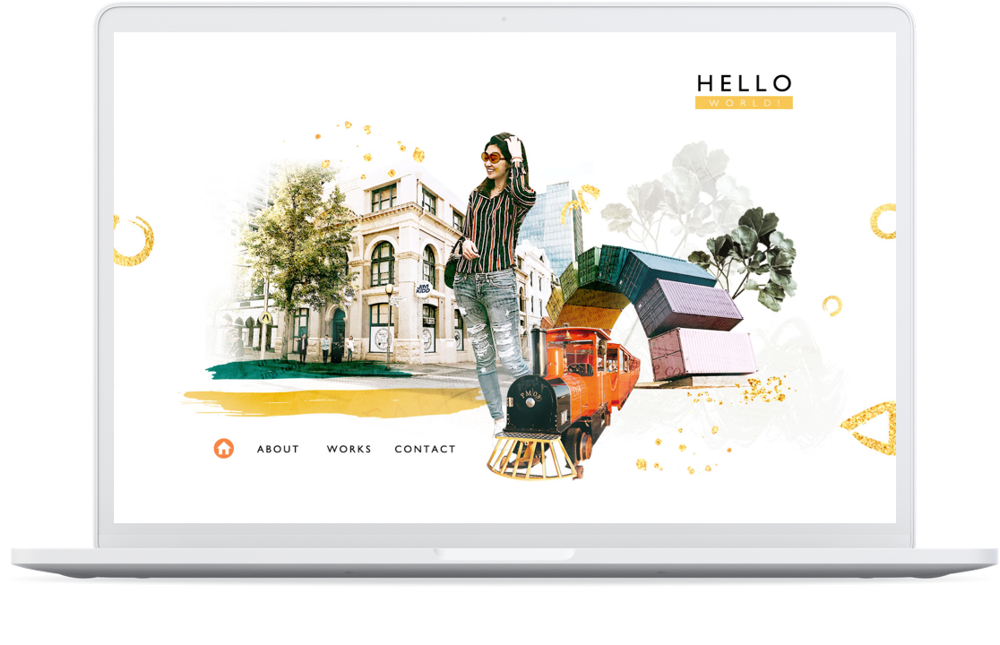
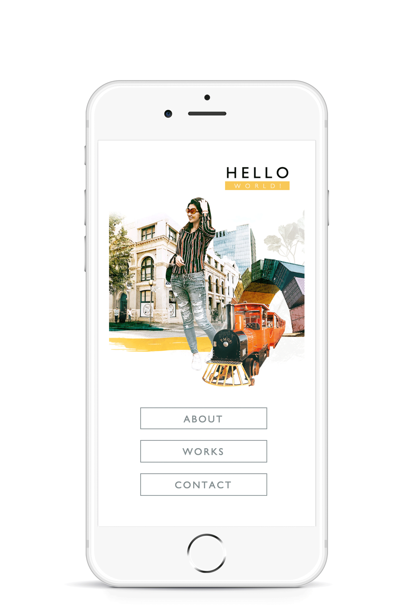

Story
會有這樣的設計想法是因為今年去澳洲，一個與東南亞國家完全不一樣的世界，不管是景色、文化、金髮白皮的人們、英式風格的建築街道，一切都讓我充滿驚奇，也大開了眼界。就如同我想跨領域到UI/UX一般，所有的一切都是如此新鮮，新的軟體、新的工作方式、未知的資訊、知識...想表達的是這樣的感覺。
而hello world是大部分工程師的第一個程式碼，而這個網頁便是象徵我跨領域的入門磚。
設計
首頁主要以澳洲拍攝的景物做為視覺重點，上面壓了一些英文字及仿舊的質感，讓這些物件帶一點神秘與未知的氛圍，視覺周圍繞著幾何形，搭配金粉，增添活潑與驚喜感，使整體更加和諧。
 互動
互動
為了讓讀者能更有融入感，電腦版頁面設有滑鼠跟隨的動態效果，行動裝置(直立)則是有陀螺儀跟隨，讓圖片有種偽3D的效果。
Personal Website Design
以視覺為導向的個人首頁，活潑清新的風格，想表達發現新世界的驚喜與感動，以黃色為主色，搭配景物元素及一些幾何圖形，簡約又帶點小華麗...
工具軟體
Photoshop： 首頁視覺設計、照片編修、切圖
Illustrator： 向量元件繪製、SVG輸出
Sketch： 大部分的網頁規劃、排版
Dreamweaver： 網頁程撰寫，包含html、css、javascript、jQuery的編輯與修改
████████████████████████████████████

